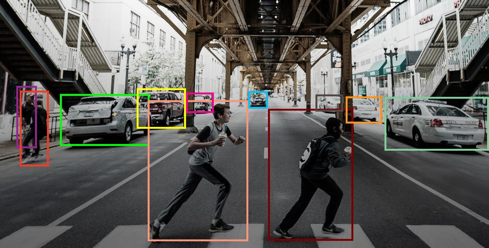
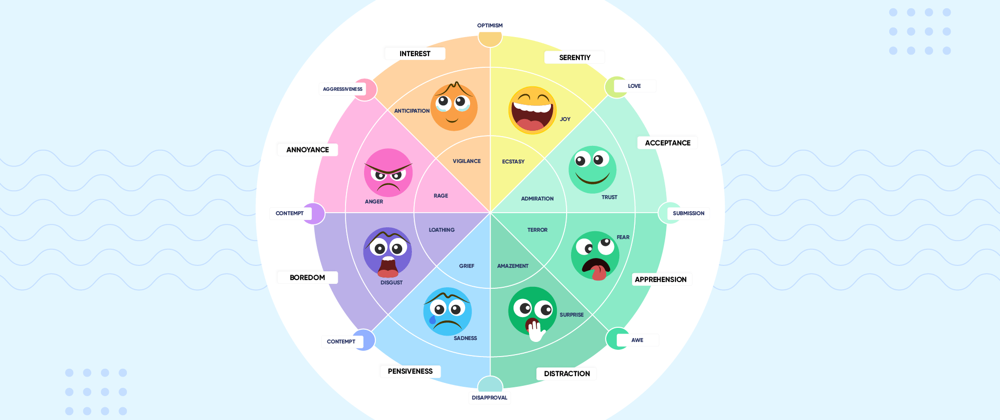
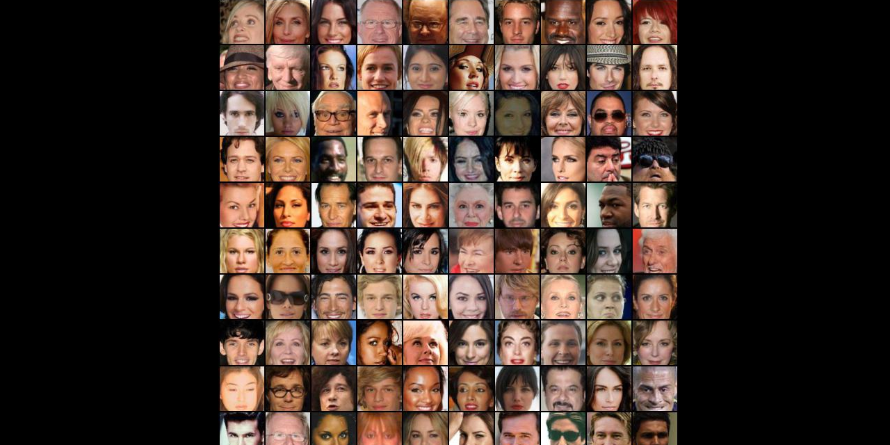

A few Computer Vision projects I have done in the past
Computer Vision
Computer vision is an interdisciplinary scientific field that deals with how computers can gain high-level understanding from digital images or videos. From the perspective of engineering, it seeks to understand and automate tasks that the human visual system can do. Computer vision tasks include methods for acquiring, processing, analyzing and understanding digital images, and extraction of high-dimensional data from the real world in order to produce numerical or symbolic information, e.g. in the forms of decisions. Understanding in this context means the transformation of visual images (the input of the retina) into descriptions of the world that make sense to thought processes and can elicit appropriate action. This image understanding can be seen as the disentangling of symbolic information from image data using models constructed with the aid of geometry, physics, statistics, and learning theory.

Object Detector
Object Detection performed on the dataset in the repository using multiple algorithms ranging from YOLOv1 to YOLOv4, SSD and all versions of RCNN such as Mask RCNN, Fast RCNN and Faster RCNN.

Emotion Detector
This project aims to classify the emotion on a person's face into one of seven categories, using deep convolutional neural networks. The model is trained on the FER-2013 dataset which was published on International Conference on Machine Learning (ICML). This dataset consists of 35887 grayscale, 48x48 sized face images with seven emotions - angry, disgusted, fearful, happy, neutral, sad and surprised.

Face Generation Using GAN
Utilising the architecture of Generative Adversarial Network, we train it to generate new faces from an existing dataset